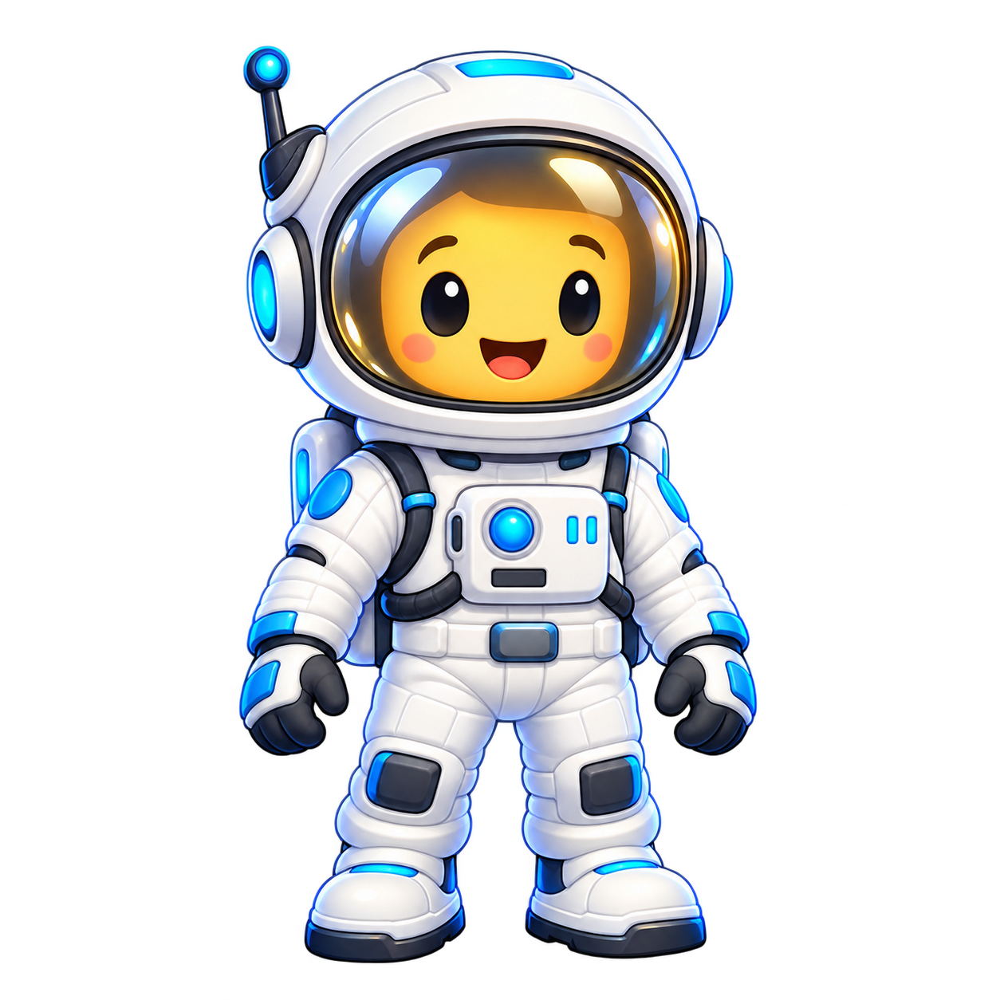

Whack a Word
Đập con chuột mang đáp án đúng trước khi nó biến mất.
Mỗi từ chỉ cần trả lời đúng một lần trong vòng học hiện tại. Khi đã trả lời đúng, từ đó sẽ không xuất hiện lại ở các game khác.
Chọn kỹ năng và bộ từ muốn luyện.
Chọn chủ đề muốn học. Mỗi chủ đề có thể có nhiều Bộ 01, 02, 03...
Chọn bộ từ muốn luyện.
Từ đã trả lời đúng sẽ được loại khỏi toàn bộ game trong vòng học này.
Đập con chuột mang đáp án đúng trước khi nó biến mất.
Điều khiển giỏ để hứng đúng từ đang rơi xuống.
Đua xe 3D góc nhìn sau xe: chọn đúng cổng từ vựng để kích hoạt Nitro và vượt các xe đối thủ.
Điều khiển astronaut tới đúng đáp án trước khi aliens bắt kịp.
Giữ kākāpō trên không và bay vào đúng nghĩa của từ.
Bắn quả bóng mang đáp án chính xác trước khi nó bay mất.
Chọn đúng phao nghĩa để bơi nhanh hơn trước khi cá mập đuổi kịp.
Xoay ổ khóa mật mã để giúp chú khỉ mở cửa trước khi chết rét.
Đọc gợi ý, đập đúng chuột trù mang đáp án. Chuột hiếm cho điểm thưởng x2.
Hứng đáp án đúng.
Đi qua mê cung neon, né alien và chạm đúng Teleport Pad chứa đáp án.

Bay liên tục và chạm vào nghĩa đúng.

Bắn quả bóng chứa đáp án đúng.
Chọn đúng chiếc phao để bứt tốc, kéo giãn khoảng cách trước khi cá mập đuổi kịp.
Mở 4 ổ khóa thật nhanh để đưa chú khỉ đang run cầm cập vào căn nhà gỗ sưởi ấm.
Kiểm tra mức độ ghi nhớ của em bằng nhiều dạng câu hỏi.